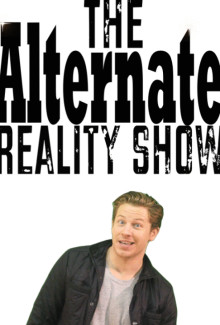
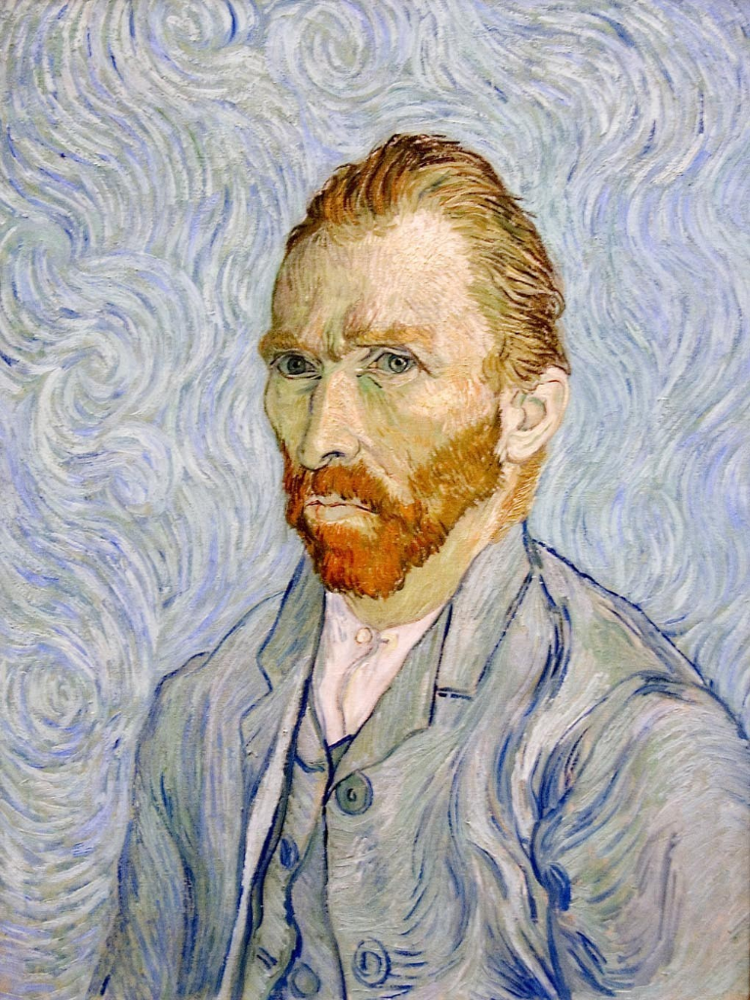

Bio
Clayton Jordan is a writer, comedian, and filmmaker. In 2011, Clayton wrote and starred in the eight-part, comedic series The Alternate Reality Show. In 2012, Clayton wrote the feature length screenplay Searching for Vince; a drama based on the life of artist Vincent van Gogh. Searching for Vince is scheduled to begin shooting in 2014. Clayton can also be seen performing stand-up comedy throughout the Chicago area.
The Alternate Reality Show
The Alternate Reality Show is a satirical look at the world of reality TV and celebrity culture. Follow John "JV" Vincent as he achieves his dream of becoming a famous reality star by simply being a shitty human being. JV might not have talent but what he does have is a video camera pointed at him.

Searching for Vince
Searching for Vince is a feature length film about the life of artist Vincent van Gogh. The story follows Van Gogh's development as an artist and his eventual collapse into mental illness. The twist is that the story is set in present day. The script is based on the 1,000 letters that Van Gogh wrote or received throughout his art career. Approaching letter writing as the 19th century's equivalent to social media, the story is partially told through modern day communication tools and networking platforms.